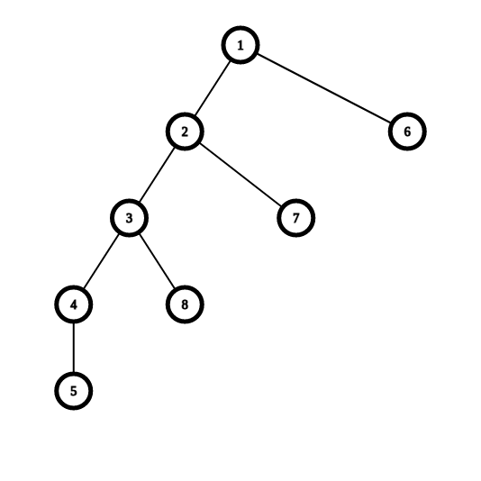

记录一个线段树合并的 trick
感谢 LMOliver 友情赠送的证明。
可以解决这样的问题：
给你一棵树，每一个节点对应一个区间修改和一个区间询问的操作，一个点的答案即为其子树内所有区间修改被执行后进行区间询问的结果
不难发现可以扩展到同一个点多个修改和多个询问的情况，这里不赘述。
首先众所周知我们朴素的线段树合并空间是 $\mathcal{O}(n\log n)$ 的。
然后一般不可持久化的线段树合并为了减小空间常数都会选择垃圾回收，就是无用节点进一个回收栈给后面的节点留空间。
但是这样子的话并没有优化空间复杂度，仍然会被形如毛毛虫的数据卡掉。
大概就是这样：

我们只要先遍历编号大的节点再遍历编号小的节点就挂了，因为我们优先遍历子树大小小的子树导致了节点存储的信息都是 $\mathcal{O}(\log n)$ 级别，而这样的节点个数是 $\mathcal{O}(n)$ 级别的。
但是我们注意到先小后大就不会挂，因此考虑遍历子树大小更大的子树。
于是我们想到重剖，然后每一次先走子树大小最大的那一个儿子，不难发现遍历第一个儿子时当前节点是不存信息的。
说明只有经过轻边才会存储信息，显然这样的点是 $\mathcal{O}(\log n)$ 个。
那么这里上界已经证明到 $\mathcal{O}(n\log n)$ 了，我们注意到这个上界还大有可以收缩的可能性。
考虑这 $\mathcal{O}(\log n)$ 个经过轻边的子树的大小，由于重剖的性质应该上界是 $n, \frac{n}{2}, \frac{n}{4}, \cdots, \frac{n}{2^k}, \cdots, 1$。
我们可以认为子树内的所有修改都直接修改在对应的根上，因此考虑分析一棵经过了 $x$ 次区间修改的动态开点线段树到底会开多少点。
由于每一层被修改的点数最多是 $2x$，与原本每一层的点数取 $\min$ 后，发现前 $\log x$ 层和后 $\log n - \log x$ 层分别是 $2^i, x$ 个点。其中 $i$ 表示层数。
那么前 $\log x$ 层的节点个数和是 $\mathcal{O}(x)$ 这个应该没什么问题，不难发现这个求和之后是 $\mathcal{O}(n)$。
那么现在只需要证明后 $\log n - \log x$ 层的节点个数和也是 $\mathcal{O}(n)$。
相当于求一个这个级别的式子：
所以是 $\mathcal{O}(n)$ 的。
世界名画：《 $\mathcal{O}(n)$ 空 间 线 段 树 合 并 》